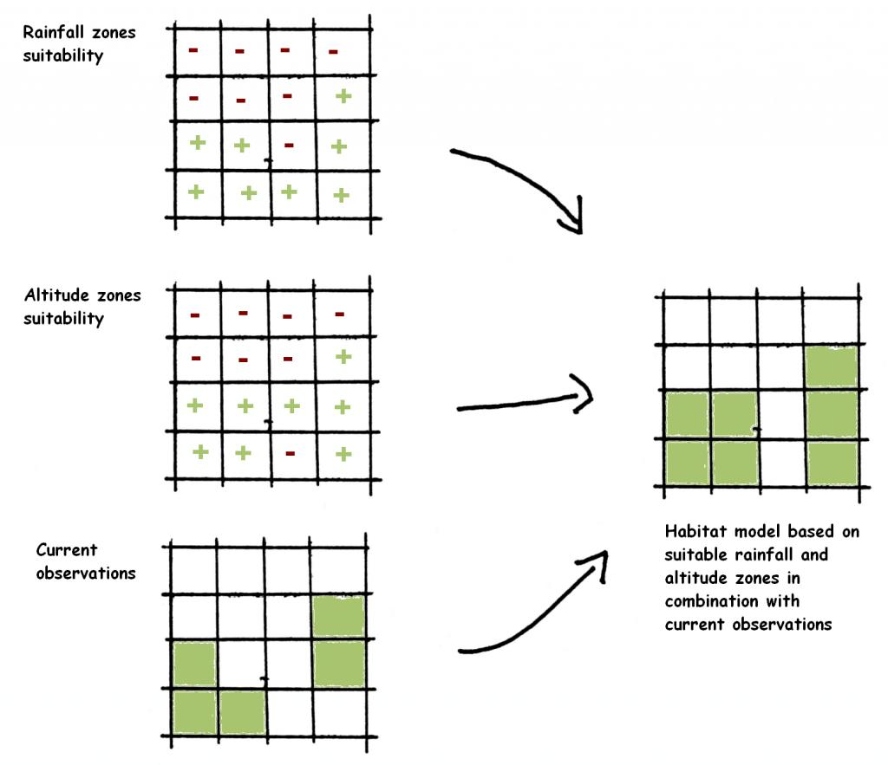
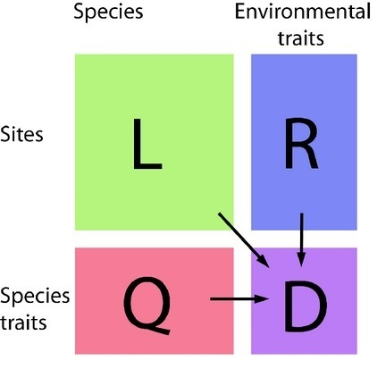
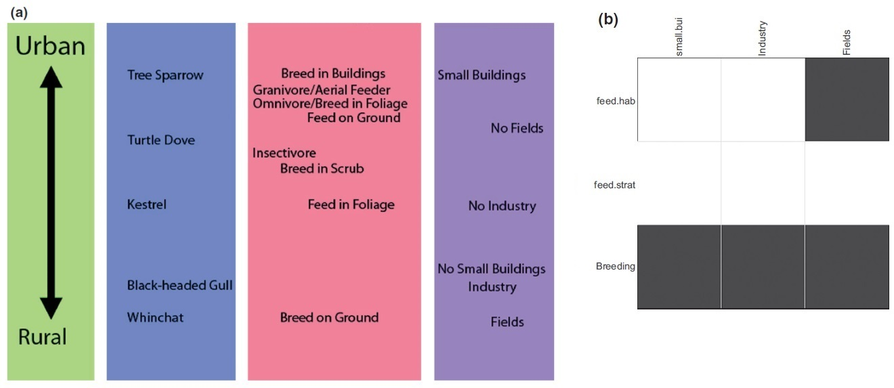
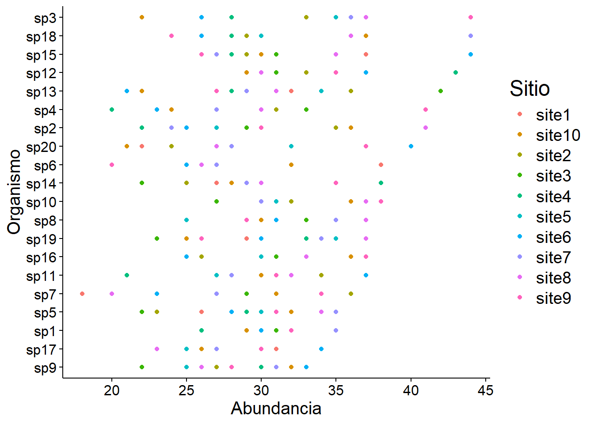

install.packages("tidyverse") # manipulación, transformación y dataviz
install.packages("mvabund") # manupilación y análisis de datos multivariantesSeminario: SDMs, rasgos funcionales y la cuarta esquina
Diversidad Biológica en los Ambientes de Agua Dulce
Máster en Biodiversidad, Funcionamiento y Gestión de Ecosistemas
Parte 1 — Introducción
Ejercicio 1
Durante estos dos días, seréis los gestores de cinco espacios naturales de los montes vascos.
Vamos a repartir la clase en cinco grupos, cada uno de los cuales se encargará de gestionar uno de estos espacios naturales: Aizkorri (Gipuzkoa), Aralar (Gipuzkoa), Artikutza (Nafarroa), Gorbeia (Bizkaia/Araba), e Izki (Araba).
Uno de vosotros será el portavoz del equipo de gerencia del parque.
Lamentablemente, vuestro presupuesto es limitado, así que solamente podéis llevar a cabo una acción para mejorar la conservación de la biodiversidad en los sistemas de agua dulce de vuestro espacio natural.
Afortunadamente, para ayudaros a tomar una decisión, tenéis a vuestra disposición unos datos maravillosos de abundancia de macroinvertebrados en diez localidades dentro de cada parque natural, así como medidas de diferentes variables ambientales en dichas localidades y de rasgos funcionales de cada organismo.
¿Por dónde empezaríais?
Modelos de distribución de especies (SDMs)
El modelado de distribución de especies es una herramienta clave en ecología y biogeografía que permite predecir y entender cómo y por qué ciertas especies se distribuyen en un hábitat o espacio geográfico determinado. Tradicionalmente, utiliza datos demográficos de las especies (bien presencia/ausencia, bien abundancia) junto con variables ambientales para construir modelos que simulan su distribución en diferentes escenarios. Estos modelos son fundamentales para la conservación de la biodiversidad, el manejo de ecosistemas, la restauración de hábitats y el estudio de los impactos del cambio climático sobre las especies. Además, proporcionan información crucial para la toma de decisiones en, por ejemplo, la planificación ambiental y el diseño de áreas protegidas.

Rasgos funcionales: cuarta esquina o fourth-corner
El problema de la cuarta esquina (fourth-corner) trata de relacionar los rasgos de los organismos con el entorno en el que estos se encuentran. Es una aproximación más holística al modelado de distribución de especies que nos permite responder a preguntas ecológicas diferentes. ¿Por qué recibe el nombre de la cuarta esquina? Se debe a que involucra tres matrices para calcular una cuarta, como vemos en el siguiente esquema:

- La matriz L contiene información de especies por localidad
- La matriz R contiene información del ambiente de dichas localidades
- La matriz Q contiene información de los rasgos de las especies
- La matriz D, entonces, contendría información de la relación rasgo-ambiente
Y, ¿por qué decimos que es un problema? Esto se debe a que no es nada sencillo calcular dicha matriz. En los últimos 30 años ha habido dos propuestas principales:
- Análisis RLQ (Dolédec et al. 1996): consiste en un enfoque exploratorio que construye ordenaciones conjuntas de variables ambientales y rasgos mediante descomposición de valores singulares, proporcionando una visión cualitativa de asociaciones generales entre rasgos y ambiente (panel a de la figura a continuación)
- Pruebas de hipótesis (Legendre et al. 1997): consiste en un enfoque de álgebra matricial en el que se realizan pruebas de permutación sobre las matrices R, L y Q para determinar una matriz D que resume qué asociaciones entre variables ambientales y rasgos son significativas, sin proporcionar detalles sobre la intensidad de estas interacciones (panel b de la figura a continuación)

Aunque ambas soluciones cumplen diferentes propósitos, no proporcionan una solución cuantitativa para la cuarta esquina y, por tanto, no nos permiten entender la magnitud de las interacciones entre rasgos y ambiente. En los pasos siguientes, veremos cómo podemos hacer esto utilizando modelos lineales generalizados con las tres matrices, siguiendo la solución propuesta por Brown et al. (2014).
Proceso de análisis (workflow)
Pregunta
¿Cómo vamos de R?
Librerías de R
En primer lugar, cargaremos las librerías de R que vamos a utilizar a lo largo de nuestros análisis. Las librerías o paquetes son recopilaciones de funciones, generalmente sobre un temática específica, que nos sirven para realizar procesos en R, como manejo o análisis de datos, de una forma estandarizada y rápida. Aunque estos paquetes suelen estar escritos por personas que se dedican a la programación o a la ciencia, R es una comunidad de software libre, así que cualquier persona que tenga una metodología y quiera compartirla con la comunidad de usuarios de R puede crear su propio paquete. Los paquetes de R pueden instalarse directamente a través del CRAN utilizando la función install_packages() con el nombre del paquete como argumento de la función, entre comillas (por ejemplo: install.packages("tidyverse")). En ocasiones, también pueden instalarse directamente desde las cuentas de GitHub de los usuarios. Los paquetes solo necesitan instalarse una vez en un ordenador (aunque conviene estar informado sobre posibles actualizaciones). Sin embargo, cada vez que iniciamos una nueva sesión de R hemos de cargar esos paquetes. Esto se hace usando la función library(), que es la forma de decirle a nuestro programa que queremos utilizar las funciones que el paquete contiene.
A continuación, pues, instalamos las librerías a utilizar:
Y las cargamos:
# fíjate en que ya no hacen falta las comillas para cargar los paquetes
library(tidyverse)
library(mvabund)Estos paquetes son:
tidyverse(Wickham et al. 2019), que es en realidad una colección de paquetes de programación funcional que sirven para la manipulación de datos de forma más eficiente, utilizando tuberías (pipes) para enlazar elementos. La pipe es%>%, que veremos mucho en el código en este documento. Aunque parezca poco tostón escribir%,>y%, podéis insertarla automáticamente presionando las teclasshift + control + men Windows (oshift + command + men Mac).mvabund(Wang et al. 2012), que es un paquete para modelizar datos de abundancia en ecología de comunidades y que contiene las funciones que utilizaremos en el análisis de fourth-corner.
Datos dummy
Vamos a crear matrices con datos ficticios (lo que se llama en inglés datos dummy) para aprender cómo se utiliza esta técnica. Lo primero que haremos será seleccionar cuántas especies, cuántos rasgos funcionales, cuántas variables ambientales y cuántos sitios o localidades queremos:
species <- 20 # número de especies para nuestros datos dummy
sites <- 10 # número de sitios o localidades para nuestros datos dummy
traits <- 15 # número de rasgos funcionales para nuestros datos dummy
env_var <- 15 # número de variables ambientales para nuestros datos dummyY, a continuación, vamos a sembrar una semilla (seed). ¿Qué quiere decir esto? La semilla es un número natural que transforma lo estocástico en determinista. Esto es, al trabajar con funciones que generan datos aleatorios (por ejemplo, runif(n), siendo n el número de elementos a generar), si no hemos plantado una semilla, cada vez que corramos la función los resultados generados cambiarán (¡probad a correr runif(10) sin semilla varias veces!). Sin embargo, cuando plantamos una semilla usando la función set.seed(), el resultado generado será siempre el mismo, y sólo cambiará si cambiamos la semilla.
Por lo tanto, para generar datos diferentes en cada parque natural, cada equipo de gestores va a usar una semilla distinta:
- Aizkorri: 7120
- Aralar: 9937
- Artikutza: 1840
- Gorbeia: 5647
- Izki: 216
Yo voy a hacer los análisis en paralelo usando mi propia semilla, la 5558.
set.seed(5558)Finalmente, vamos a crear las matrices necesarias para los análisis. Tenemos en mente que, aunque en este ejercicio estamos generando datos ficticios, en la práctica estas matrices comprenderían datos reales de nuestro sistema de estudio. La cuestión es que estos datos deben estar organizados en las siguientes matrices con la siguiente estructura:
Matriz L
Matriz de abundancia de especies por localidad (L), con 20 especies en columnas y 10 localidades en filas.
# crear una base de datos de combinaciones de especie y sitio
L <- expand.grid(
species = paste0("sp", 1:species),
sites = paste0("site", 1:sites)
)
# añadir una columna con los datos de abundancia
L$value <- rpois(nrow(L), 30)
# incorporar los datos a una matriz
L <- L %>%
spread(key = species, value = value) %>%
column_to_rownames(var = "sites") %>%
as.data.frame()
# observar las primeras filas de dicha matriz
head(L) sp1 sp2 sp3 sp4 sp5 sp6 sp7 sp8 sp9 sp10 sp11 sp12 sp13 sp14 sp15 sp16
site1 32 25 33 33 26 38 18 31 33 30 32 33 32 27 37 25
site2 30 35 33 31 23 27 36 29 27 32 34 33 36 25 29 26
site3 31 29 35 33 22 26 29 33 22 27 27 31 42 22 31 31
site4 26 22 28 20 29 26 31 29 30 31 21 43 28 38 28 36
site5 32 27 35 27 30 32 31 25 25 31 27 30 34 28 30 30
site6 30 25 26 23 28 25 23 31 33 30 37 37 21 28 44 25
sp17 sp18 sp19 sp20
site1 31 44 29 22
site2 25 29 33 24
site3 30 24 23 40
site4 26 28 33 28
site5 25 30 35 32
site6 34 26 30 40Matriz Q
Matriz con datos de rasgos funcionales por especie (Q), con 15 rasgos en filas y 20 especies en columnas.
# crear una base de datos de combinaciones de rasgos y especies
Q <- expand.grid(
species = paste0("sp", 1:species),
traits = paste0("t", 1:traits)
)
# añadir una columna con los datos cuantitativos
Q$value <- round(runif(n = nrow(Q), 0, 1), 3)
# incorporar los datos a una matriz
Q <- Q %>%
spread(key = species, value = value) %>%
column_to_rownames(var = "traits") %>%
as.data.frame()
# observar las primeras filas de dicha matriz
head(Q) sp1 sp2 sp3 sp4 sp5 sp6 sp7 sp8 sp9 sp10 sp11 sp12
t1 0.632 0.477 0.792 0.192 0.965 0.972 0.707 0.456 0.170 0.257 0.372 0.627
t2 0.419 0.936 0.186 0.370 0.105 0.483 0.419 0.644 0.811 0.925 0.735 0.284
t3 0.546 0.293 0.964 0.869 0.789 0.547 0.773 0.087 0.182 0.675 0.536 0.838
t4 0.826 0.192 0.035 0.402 0.056 0.186 0.391 0.619 0.018 0.733 0.347 0.836
t5 0.193 0.293 0.929 0.185 0.108 0.121 0.693 0.741 0.403 0.045 0.423 0.332
t6 0.291 0.693 0.973 0.921 0.599 0.040 0.657 0.002 0.169 0.182 0.044 0.575
sp13 sp14 sp15 sp16 sp17 sp18 sp19 sp20
t1 0.115 0.805 0.145 0.184 0.889 0.629 0.539 0.134
t2 0.875 0.765 0.839 0.444 0.332 0.791 0.885 0.021
t3 0.134 0.674 0.212 0.616 0.690 0.364 0.301 0.605
t4 0.522 0.022 0.502 0.978 0.026 0.421 0.234 0.833
t5 0.522 0.375 0.515 0.533 0.563 0.949 0.247 0.955
t6 0.456 0.443 0.700 0.952 0.513 0.031 0.154 0.6292.2. Matriz R
Matriz con datos de variables ambientales por localidad (R), con 15 variables ambientales y 10 localidades.
# crear una base de datos de combinaciones de variables ambientales y sitios
R <- expand.grid(
environ = paste0("env", 1:env_var),
sites = paste0("site", 1:sites)
)
# Add a column with random quantitative data from 0 to 1
R$value <- round(runif(n = nrow(R), 0, 1), 3)
# incorporar los datos a una matriz
R <- R %>%
spread(key = environ, value = value) %>%
column_to_rownames(var = "sites") %>%
as.data.frame()
# observar las primeras filas de dicha matriz
head(R) env1 env2 env3 env4 env5 env6 env7 env8 env9 env10 env11 env12
site1 0.182 0.411 0.334 0.245 0.502 0.237 0.054 0.834 0.156 0.119 0.912 0.783
site2 0.105 0.073 0.226 0.262 0.292 0.446 0.466 0.778 0.561 0.885 0.092 0.843
site3 0.157 0.039 0.610 0.521 0.729 0.134 0.815 0.844 0.458 0.307 0.735 0.473
site4 0.392 0.276 0.439 0.656 0.164 0.320 0.623 0.089 0.556 0.065 0.104 0.152
site5 0.920 0.204 0.332 0.190 0.773 0.988 0.498 0.651 0.505 0.542 0.706 0.508
site6 0.078 0.679 0.211 0.481 0.684 0.368 0.803 0.644 0.473 0.213 0.484 0.486
env13 env14 env15
site1 0.913 0.854 0.303
site2 0.724 0.045 0.518
site3 0.409 0.375 0.432
site4 0.396 0.339 0.349
site5 0.168 0.272 0.210
site6 0.779 0.694 0.296Exploración de los datos
El objetivo de esta sesión no es aprender R, ni mucho menos dominar la visualización de datos, pero sí me gustaría que os lleváseis una idea de que estas herramientas están disponibles y no son tan innaccesibles como pueden parecer.
Lo primero que vamos a hacer es observar cómo es la distribución de la abundancia de organismos en las diferentes poblaciones. Para ello, vamos a utilizar el paquete ggplot2, perteneciente al tidyverse, del que ya hablamos anteriormente. La función ggplot() es una de las más poderosas del lenguaje R para crear visualizaciones de datos. Funciona por capas: primero, ggplot crea un espacio o lienzo definido por ciertas variables de una base de datos. Dicho lienzo puede ser completado con la adición de distintas funciones de representación de los datos, como geom_point() o geom_line() que añaden una nube de puntos o una línea, respectivamente. Asimismo, funciones cómo theme() se encargan de cuidar los detalles estéticos del gráfico, como el tamaño de la letra de los rótulos, el color de fondo o la presencia o ausencia de ejes. Para más comodidad, en lugar de añadir la estética para cada gráfico, podemos utilizar la función theme_set() para definir una estética global que se aplica a todos los gráficos.
# estética general de los plots
theme_set(
theme_minimal() +
theme(
axis.title = element_text(size = 15),
axis.line = element_line(color = "black", linewidth = 0.5),
panel.grid.major = element_blank(),
panel.grid.minor = element_blank(),
axis.text = element_text(color = "black", size = 12),
strip.text.x = element_text(size = 12),
axis.ticks = element_line(color = "black")
)
)# plot de abundancia por sitio
L %>%
# pasamos los nombres de fila a una columna
rownames_to_column(var = "site") %>%
# transformamos la matrix para poder hacer el plot
pivot_longer(cols = -site, names_to = "species", values_to = "abundance") %>%
# añadimos el plot
ggplot(aes(
x = abundance,
y = reorder(species, abundance, FUN = max),
color = site
)) +
geom_point() + # gráfico de puntos
labs(x = "Abundancia", y = "Organismo", color = "Sitio") +
theme(text = element_text(size = 18))
Aproximaciones a la distribución de especies
Queremos entender cómo se distribuyen los organismos en términos de abundancia. A continuación, vamos a ir construyendo nuestro entendimiento de cómo esto sucede, desde las preguntas y análisis más sencillos.
¿Efecto general del sitio?
Lo primero de todo: hemos muestreado diez localidades en cinco espacios naturales diferentes. ¿Está la abundancia de los diferentes organismos determinada por el lugar de muestreo?
El paquete mvabund nos permite ajustar modelos para explicar la abundancia de los organismos. Para esto, es necesaria una pequeña transformación de la estructura de la matriz de datos L, que se realiza con la función homónima mvabund(), integrada en el paquete. Tras esto, somos capaces de utilizar otra función de mvabund, manyglm(), para explicar la abundancia de la matriz en función del lugar de muestreo, explícito como rownames(L) o, lo que es lo mismo, los nombres de las filas de la matriz L. Podemos especificar la distribución de los datos para el modelo utilizando el argumento family; en este caso, lo que mejor se ajusta es una distribución poisson, pero podéis probar a cambiar esta distribución (por ejemplo, a family = "negative_binomial") y ver qué ocurre con la distribución de los residuos.
# creamos un objeto 'mvabund' a partir de la abundancia
spp <- mvabund(L)
# hacemos un modelo para explicar la abundancia en función del sitio
mod <- manyglm(spp ~ rownames(L), family = "poisson") # distr. poisson
# representamos los residuos del modelo
plot(mod)
Luego, simplemente lo podemos resolver con un análisis de la varianza:
# análisis de la varianza para ver si el sitio explica la abundancia
(anov <- anova(mod, nBoot = 999))Time elapsed: 0 hr 0 min 1 secAnalysis of Deviance Table
Model: spp ~ rownames(L)
Multivariate test:
Res.Df Df.diff Dev Pr(>Dev)
(Intercept) 9
rownames(L) 0 9 156.5 0.201
Arguments:
Test statistics calculated assuming uncorrelated response (for faster computation)
P-value calculated using 999 iterations via PIT-trap resampling.Como podemos ver, el estadístico nos indica que p = 0.201 > 0.05 y, por tanto, podemos decir que el sitio no tiene un efecto significativo a la hora de explicar las abundancias de los organismos.
Explicación a través del ambiente
En segundo lugar, podemos realizar la aproximación más clásica en modelos de distribución de especies: intentar entender qué variables climáticas explican la abundancia de los diferentes organismos. Ciertos modelos más o menos complejos incluso permiten hacer predicciones sobre la distribución potencial de los organismos a través de modelización ambiental.
En nuestro caso, podemos utilizar una función integrada en el paquete mvabund llamada traitglm(). Esta función aplica modelos lineales generalizados (GLMs) para explicar una matriz de datos en función de otra (u otras) matrices de datos de estructura compatible. Por ejemplo, no podremos explicar una matriz de 10x20 en función de una matriz de 5x15, pero sí una de 10x20 en función de una de 10x15.
# explicamos la matriz de abundancia en función del ambiente
sdm_env <- traitglm(L, R) # modelo lineal generalizado (glm)No traits matrix entered, so will fit SDMs with different env response for each spp # transformar y dataviz
sdm_env$fourth.corner %>%
as_tibble(rownames = "species") %>%
pivot_longer(cols = -species, names_to = "env_var", values_to = "value") %>%
mutate(
species = as.factor(str_extract(species, "sp\\d+")),
value = round(value, 5),
env_var = forcats::fct_inorder(env_var),
species = forcats::fct_reorder(
species,
as.numeric(str_extract(species, "\\d+"))
)
) %>%
# mapa de calor
ggplot(aes(x = env_var, y = fct_rev(species), fill = value)) +
geom_raster() +
scale_fill_gradient2(
low = "blue",
mid = "white",
high = "red",
midpoint = 0
) +
labs(x = "Variables ambientales", y = "Especies", fill = "Coeficiente") +
theme(axis.text.x = element_text(angle = 60, hjust = 1, vjust = 1))
A pesar de que esta aproximación nos aporta gran información sobre la relación de las especies con su ambiente, no deja de ser una forma de analizar qué ocurre con las especies de forma individual. Esto no nos permite alcanzar el nivel de abstracción que deseamos para resolver a nuestra pregunta; para ello, necesitamos incluir los datos de los rasgos funcionales de las especies.
Rasgos funcionales y la matriz fourth-corner
Esto lo podemos hacer con la misma función, traitglm(), pero añadiendo la matriz Q. En este caso, necesitamos introducir la transpuesta (t()) de Q porque sino el modelo no puede computar matrices de diferente tamaño y nos da el siguiente error: number of rows of matrices must match (see arg 2).
# añadimos la matriz de rasgos funcionales
f.corner <- traitglm(L, R, t(Q)) # glm de nuevo
# observemos la matriz fourth-corner
f.corner$fourth.corner env1 env2 env3 env4 env5
t1 0.005896477 -0.030156079 0.032728336 -0.022556718 -0.026917732
t2 -0.015514887 0.013106324 -0.012049221 -0.039692052 -0.007347624
t3 0.020185284 0.024309594 0.049111168 0.001369728 -0.046107386
t4 -0.004948459 0.012092828 -0.030603234 -0.014503910 0.024181498
t5 -0.020400040 0.005302025 0.020634272 -0.017760382 -0.009821665
t6 -0.042718373 0.017132002 -0.056464978 -0.041663403 0.040201806
t7 0.016447268 -0.032752837 0.066954612 0.021185391 -0.057901879
t8 0.006364846 -0.025288544 0.051488167 0.018310605 -0.029164103
t9 0.014388225 -0.047493117 0.024863594 0.010236594 0.014282519
t10 -0.013240487 0.036835328 -0.015586492 -0.008098365 -0.008877121
t11 -0.014959676 -0.013503966 0.008225036 0.007433749 -0.012406317
t12 0.003445801 -0.036153152 0.051730749 0.009830930 -0.019343220
t13 -0.019283181 -0.024839259 0.048699685 -0.016277801 -0.036393665
t14 -0.024046745 0.050593395 -0.028186839 -0.009237108 0.013941703
t15 -0.004714214 -0.001967574 -0.007937043 -0.026548242 0.027757722
env6 env7 env8 env9 env10
t1 -0.019726434 -0.029070770 0.015378237 -0.033377981 -0.007832847
t2 0.001187777 -0.021322501 0.035382373 -0.026892351 0.015762487
t3 0.028208979 -0.008266815 -0.008361714 0.011775754 0.032692182
t4 0.004730038 0.018637453 0.007642035 -0.002224654 -0.015310601
t5 -0.015122491 0.024281807 0.001866518 -0.009335415 -0.019099460
t6 -0.020126082 0.072155957 0.013309618 0.008538976 -0.026845870
t7 -0.025845623 -0.002285457 -0.034460053 0.008901942 -0.005117371
t8 -0.010154626 -0.037706166 -0.010054318 -0.012561046 0.007880418
t9 0.010102239 -0.080896695 0.030564598 -0.030114349 0.037166281
t10 0.002662576 0.038930905 -0.002267904 0.016424265 -0.003331159
t11 -0.033098305 0.024245015 -0.013565228 0.009772219 -0.013308426
t12 -0.012807564 -0.041765937 0.031867364 -0.015526612 0.037339151
t13 -0.040957657 0.010185582 -0.017816583 -0.018358099 -0.031138063
t14 0.001621939 0.028463857 0.031573752 0.001838934 0.005727427
t15 0.010479725 0.005533823 0.012901708 -0.014480981 -0.010271220
env11 env12 env13 env14 env15
t1 0.028755140 0.027739712 -0.001766501 -0.008262744 -0.011906722
t2 0.018141164 0.050584237 0.034553432 0.011548849 -0.013527046
t3 0.001882132 0.004668550 0.025864721 -0.003212201 0.030810105
t4 -0.006084416 0.009707665 -0.011986105 -0.005002110 -0.042549437
t5 0.004529213 0.019836164 0.011786953 -0.006707977 -0.024753065
t6 0.006919360 0.036652412 0.013557160 0.022501647 -0.060949812
t7 0.015657700 -0.018618540 -0.001088288 0.003257411 0.038172591
t8 0.011025947 -0.015608570 0.010151306 -0.001234242 0.053281915
t9 0.014327452 -0.009588088 -0.006568942 -0.020472294 0.065077764
t10 -0.015113117 0.015529544 0.012788965 0.003663808 -0.032685636
t11 0.013128807 -0.003697762 0.009224238 0.023593957 0.012053497
t12 0.026922428 0.007788756 0.008441355 -0.009807739 0.055847632
t13 0.026987546 0.014832604 0.021859639 0.013164277 0.003823548
t14 0.001589585 0.027440968 0.024061261 0.018156810 -0.030603694
t15 0.006159755 0.014595450 -0.005079241 -0.012195386 -0.026284344Y, de esta forma, somos capaces de calcular las interacciones entre los rasgos funcionales de los organismos y el ambiente en el que ocurren. Vamos a representar estos coeficientes gráficamente, no sin antes hacer una rápida comprobación de los residuos del modelo:
# comprobamos las asunciones del modelo
plot(f.corner)
# finalmente, podemos representar el mapa de calor
f.corner$fourth.corner %>%
as_tibble(rownames = "traits") %>%
pivot_longer(cols = -traits, names_to = "env_var", values_to = "value") %>%
mutate(
value = round(value, 5),
env_var = forcats::fct_inorder(env_var),
traits = forcats::fct_reorder(
traits,
as.numeric(str_extract(traits, "\\d+"))
)
) %>%
# mapa de calor
ggplot(aes(x = env_var, y = fct_rev(traits), fill = value)) +
geom_raster() +
scale_fill_gradient2(
low = "blue",
mid = "white",
high = "red",
midpoint = 0
) +
labs(
x = "Variables ambientales",
y = "Rasgos funcionales",
fill = "Coeficiente"
) +
theme(axis.text.x = element_text(angle = 60, hjust = 1, vjust = 1))
Discusión
¿Qué información obtenéis de este gráfico? ¿Os ayuda a tomar alguna decisión sobre qué mejorar en vuestro espacio natural?
Referencias
Brown, A.M., Warton, D.I., Andrew, N.R., Binns, M., Cassis, G. & Gibb, H. (2014). The fourth-corner solution using predictive models to understand how species traits interact with the environment. Methods in Ecology and Evolution, 5, 344-352.
Dolédec, S., Chessel, D., Braak, C.J.F. ter & Champely, S. (1996). Matching species traits to environmental variables: a new three-table ordination method. Environmental and Ecological Statistics, 3, 143-166.
Legendre, P., Galzin, R. & Harmelin-Vivien, M.L. (1997). Relating Behavior to Habitat: Solutions to Thefourth-Corner Problem. Ecology, 78, 547-562.
Wang, Y., Naumann, U., Wright, S.T. & Warton, D.I. (2012). mvabund an R package for model-based analysis of multivariate abundance data. Methods in Ecology and Evolution, 3, 471-474.
Wickham, H., Averick, M., Bryan, J., Chang, W., McGowan, L.D., François, R., et al. (2019). Welcome to the Tidyverse. Journal of Open Source Software, 4, 1686.